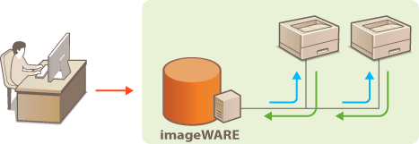
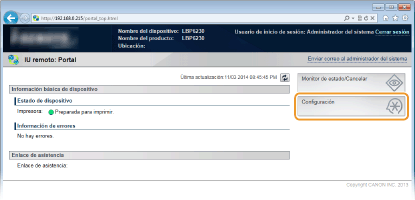
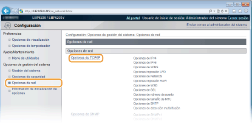
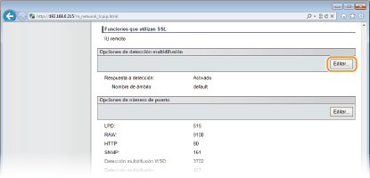
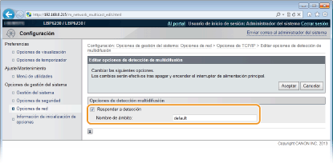

0KXF-02K
Puede utilizar software de gestión de dispositivos como imageWARE Enterprise Management Console* para facilitar la recopilación y la gestión de información sobre los dispositivos en red. En un entorno en el que se ha instalado este software, la información sobre las opciones de los dispositivos y los errores se recoge a través de un servidor en la red. Si el equipo está conectado a una red imageWARE, este software buscará la red del equipo utilizando protocolos tales como el Protocolo de ubicación de servicios (SLP). Las opciones de SLP pueden especificarse a través del IU remoto.
* Para obtener más información sobre imageWARE, póngase en contacto con su distribuidor de Canon local autorizado.

|
|
|
Para cambiar el número de puerto de SLP Cambios en los números de puerto
|
1
Inicie el IU remoto e inicie sesión en modo Administrador del Sistema. Inicio del IU remoto
2
Haga clic en [Configuración].

3
Haga clic en [Opciones de red]  [Opciones de TCP/IP].
[Opciones de TCP/IP].

4
Haga clic en [Editar] en [Opciones de detección multidifusión].

5
Seleccione la casilla de verificación [Responder a detección] e introduzca la información necesaria.

[Responder a detección]
Seleccione la casilla de verificación para que el equipo responda a los paquetes de detección multidifusión de imageWARE y permita la gestión a través de imageWARE. Si no quiere que el equipo responda, desmarque la casilla de verificación.
Seleccione la casilla de verificación para que el equipo responda a los paquetes de detección multidifusión de imageWARE y permita la gestión a través de imageWARE. Si no quiere que el equipo responda, desmarque la casilla de verificación.
[Nombre de ámbito]
Para incluir el equipo en un ámbito específico, introduzca hasta 32 caracteres alfanuméricos en el nombre de ámbito.
Para incluir el equipo en un ámbito específico, introduzca hasta 32 caracteres alfanuméricos en el nombre de ámbito.
6
Haga clic en [Aceptar].
7
Reinicie el equipo.
Apague el equipo, espere al menos 10 segundos y vuelva a encenderlo.